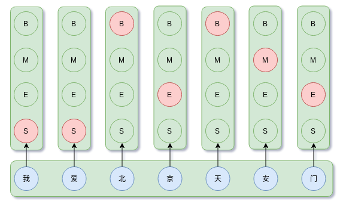

概率图模型系列（5）：条件随机场CRF
HMM引入马尔科夫假设，当前状态只与前一时刻状态有关，然而在很多情况下知道前一时刻状态与后一时刻状态对当前状态的判定有准确，例如分词。这种情况下，MEMM解决去掉了HMM的观察独立性假设，解决HMM的问题。但是，由于MEMM存在局部归一化问题，导致其倾向于选择状态转移更少的状态，引发标签偏置问题。CRF通过引入全局归一化能够解决MEMM标签偏置问题。
首先我们还是不厌其烦地重述一下序列标注。
序列标注问题
输入一个序列，输出一个同等长度的序列，并且输入输出每个时间步一一对应，
一一对应值输入$x_{i}$对应$y_{i}$输出。
概率表达，
我们建模要做的是找到概率最大的序列，即
对于机器学习或深度学习来说，就是优化下面的Loss，
两种目标是一致的。
首先我们考虑相邻标签之间的约束，在序列标注中，我们常常拿MLP+逐时间步softmax分类来作为baseline。
作为逐时间步分类问题
解决序列标注问题的最直接思路是逐时间步做softmax分类，

上图表示每个时间步都是一个标签为BMES的多分类问题。做序列标注最直接的方法是RNN+softmax，不考虑标签间的约束，即每个时间步的标签互相独立，假设$\boldsymbol{H} = [\boldsymbol{h}_{1}, \dots, \boldsymbol{h}_{n}]$是输入序列经过模型如LSTM神经网络编码后的输出，推导如下，
于是有，
于是，当前时间步的标签只由当前隐状态$h_{i}$决定，该隐状态可以是模型CNN、BiLSTM编码得到。这种方法训练和推断效率都非常高，但欠缺对标签间约束的考虑。这会导致相邻标签出现“MB”的情况，这显然是不合理的。
序列标注问题的最直观做法是逐个时间步求概率最大化的项，也就是在逐时间步做分类。这个做法在某些回归问题上很好，但是考虑到类别之间有关联就出现BUG了。试想象，在中文分词中，标签集合为{B,M,E,S}，标签B后不能接S，只能是M或E。为此，需要考虑相邻标签间的约束。
导出CRF
$P(y_{1}, y_{2}, \dots ,y_{n} |\boldsymbol{x})$的取值可以看作是$y_{1}, y_{2}, \dots ,y_{n}$和$\boldsymbol{x}$的某个打分函数，
当$P(y_{1}, y_{2}, \dots ,y_{n} |\boldsymbol{x})$概率取值越大，打分函数$P(y_{1}, y_{2}, \dots ,y_{n} |\boldsymbol{x})$打分越大。因此，条件概率可以表示为，
这个形式其实可以看做是推广的softmax，这样一来可以使得整个模型具有概率意义。
然而，$f(y_1,\dots,y_n;\boldsymbol{x})$本身还是太负责太抽象，我们化简一下，
可能有人会想，为什么能这么操作？还能展开来？如何对这两类函数建模？哈哈，这就是机器学习的威力。站在深度学习角度来说，就是不想自己计算的东西都可以参数化。例如，这里$t(y_i, y_{i+1})$是相邻标签间的约束，所有可能的组合结果构成一个$m\times m$大小的参数矩阵，其实可以类比HMM中的状态转移矩阵，但是两种不等价，而$h(y_i, \boldsymbol{x})$是上下文特征对$y_i$的评分。
于是就有线性链CRF的导出，完整推导如下，
其中$t(y_{0},y_{1}) = 0$，$Z(\boldsymbol{x})$是全局归一化因子。它的基本思想是$h(y_i, \boldsymbol{x})$容易建模，其实如CNN、RNN即可，$t(y_i, y_{i+1})$也容易建模，其实就是一个参数矩阵，但是希望整个模型是概率形式，最直接的方法就是使用以上的指数形式。
对比一下MEMM的局部归一化，
可以看到，MEMM与CRF的区别就是归一化因子。而CRF真正难求的是这个全局归一化因子$Z(\boldsymbol{x})$，涉及到排列组合求和。注意到CRF依旧考虑相邻标记的马尔可夫约束，那么这个因子$Z(\boldsymbol{x})$是可以递推计算，也就是本质上是RNN。
维特比解码
CRF本质是学习标签的约束模型，因此训练得到好，还是需要通过维特比算法求解最优路径。这一点和HMM部分讲的是一致的。
MEMM .vs. CRF
MEMM和CRF的主要差别就是在归一化上，前者是局部归一化，后者是全局归一化。从预测性能上看，往往是全局归一化由于局部归一化。
当然，也因为归一化的原因，MEMM在训练时速度快于CRF。
实现（更新）
这部分是后期补充内容，相关实验源码可参考：
基于Tensorflow的CRF实现，tensorflow-crf。
CRF应用在序列标注上，主要是NER任务，text-sequence-labeling。
中文分词任务，chinese-cut-word。
总结
在概率图系列中，我讲述了朴素贝叶斯、最大熵模型、贝叶斯网络、隐马尔可夫模型、最大熵马尔可夫模型、条件随机场等模型，其中隐马尔可夫模型、最大熵马尔可夫模型、条件随机场是对序列数据进行建模。
参考
[1] 《统计学习方法》
[2] 《统计自然语言处理》